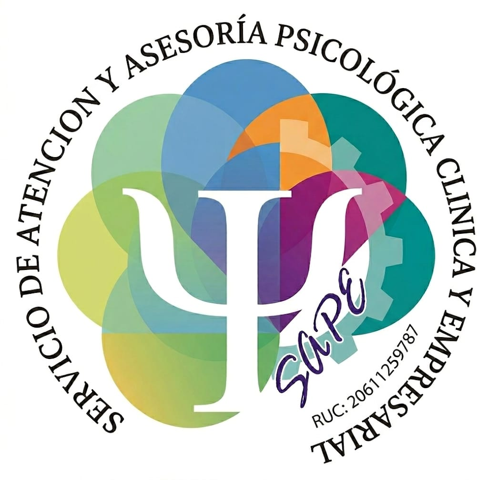
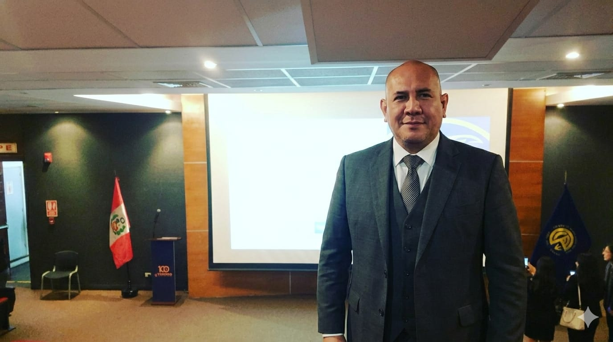

SAPE Servicio de Psicología es una organización especializada en salud mental clínica y consultoría psicológica empresarial. Nuestro trabajo integra la práctica clínica con herramientas de evaluación y gestión del riesgo humano en organizaciones.
Nuestro enfoque se basa en principios científicos, ética profesional y una comprensión integral del comportamiento humano.

El servicio es dirigido por un profesional en psicología con experiencia en intervención clínica, evaluación psicológica y gestión del talento humano.
La práctica profesional se orienta al desarrollo del bienestar psicológico, la prevención de riesgos psicosociales y el fortalecimiento del funcionamiento emocional y organizacional.
Brindar servicios psicológicos basados en evidencia científica que promuevan el bienestar emocional y el desarrollo humano.
Ser un referente en salud mental clínica y gestión psicológica empresarial en el ámbito nacional.
En SAPE aplicamos un modelo estructurado basado en tres fases: diagnóstico psicológico, intervención terapéutica y seguimiento. Este modelo permite comprender la situación del paciente u organización y desarrollar estrategias de cambio sostenibles.
Si deseas recibir orientación psicológica o conocer nuestros servicios empresariales, estaremos encantados de ayudarte.
Agendar Cita